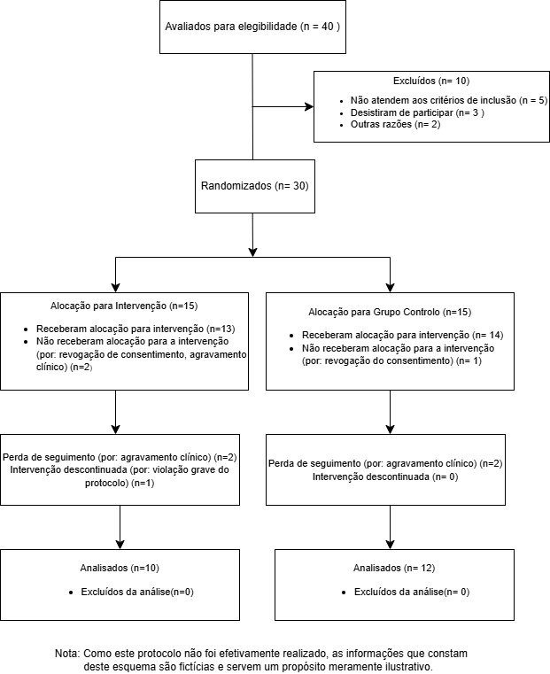

Protocolo do Estudo
Resumo do Protocolo
Nesta página apresentamos a estrutura clínica e metodológica do ensaio MindMove.
Documento Completo: (documento integral com todas as referências bibliográficas): Descarregar o Protocolo (PDF).
1. Introdução e Racional
A transição para o ensino superior é um período de vulnerabilidade crítica. O MindMove visa preencher a lacuna de suporte em saúde mental, oferecendo uma solução digital (mHealth) baseada em Terapia Cognitivo-Comportamental digital (dCBT) com monitorização de estilos de vida (sono e atividade física) para estudantes universitários com sintomas depressivos ligeiros a moderados (PHQ-9 entre 5-14).
Objetivos Principais
- Primário: Avaliar a eficácia da app na redução dos sintomas depressivos (escala PHQ-9) ao fim de 8 semanas, face a um grupo de controlo.
- Secundários: Avaliar ansiedade (GAD-7), qualidade do sono (PSQI), atividade física, viabilidade, adesão e usabilidade (SUS).
2. Métodos e Desenho do Estudo
O estudo configura-se como um ensaio clínico controlado e randomizado (RCT), de grupos paralelos (1:1), com 30 participantes, a realizar no Serviço de Psicologia da Universidade do Porto. A duração da intervenção é de 8 semanas.
Critérios de Inclusão (Resumo)
- Idade 18-30 anos, estudantes universitários ativos.
- PHQ-9 entre 5 e 14 (sintomas ligeiros a moderados).
- Posse de smartphone com internet e capacidade para usar a app.
Critérios de Exclusão (Resumo)
- Diagnóstico de Depressão Major ou patologias graves.
- Toma atual de antidepressivos ou ideação suicida ativa (PHQ-9 item 9 \(\ge\) 1).
3. Intervenções
Grupo de Intervenção (App MindMove)
Os participantes utilizam a aplicação para:
- Monitorização Ativa: Registo diário de humor e sinais vitais.
- Sistema de Alertas: Feedback e notificações em tempo real.
- Conteúdo educativo: Guias de gestão de saúde mental.
Grupo Controlo (Standard of Care)
Acompanhamento clínico convencional do SNS e entrega de um folheto informativo em papel com recomendações gerais no início do estudo.
4. Fluxo esperado do Estudo
(Abaixo encontra-se a progressão esperada dos participantes no ensaio)

| Fase | Duração | Descrição |
|---|---|---|
| Recrutamento | Semanas -2 a 0 | Divulgação digital e física; triagem online (Informed Consent + PHQ-9). |
| Baseline (T0) | Dia 0 | Avaliação completa (PHQ-9, GAD-7, PSQI); Randomização automatizada. |
| Intervenção | Semanas 1-8 | Grupo I: Uso da App MindMove (protocolo 3x/semana). Grupo C: Acesso a brochuras PDF sobre higiene do sono e saúde mental. |
| Mid-term (T1) | Semana 4 | Avaliação intermédia de segurança, adesão e sintomas (PHQ-9). |
| Post-test (T2) | Semana 8 | Avaliação final de todos os outcomes primários e secundários. |
| Follow-up | Semana 12 | (Opcional) Avaliação de manutenção de ganhos após término da intervenção. |
5. Ética e Segurança
O protocolo garante total conformidade com o RGPD (dados encriptados e anonimizados) e inclui um Protocolo de Resgate: se um participante pontuar ideação suicida ou agravamento severo, a equipa clínica recebe um alerta imediato para contacto em 24 horas.